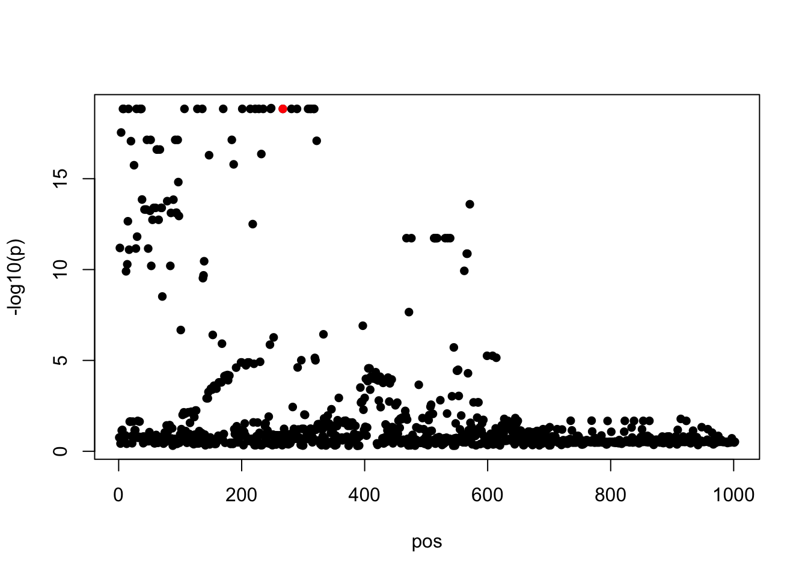
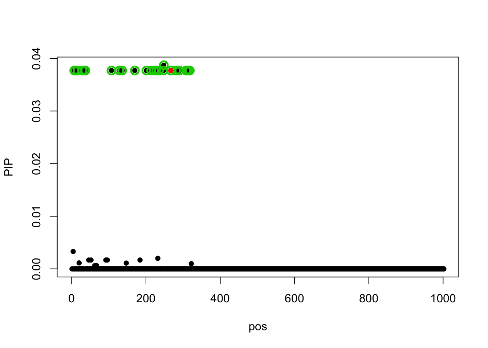
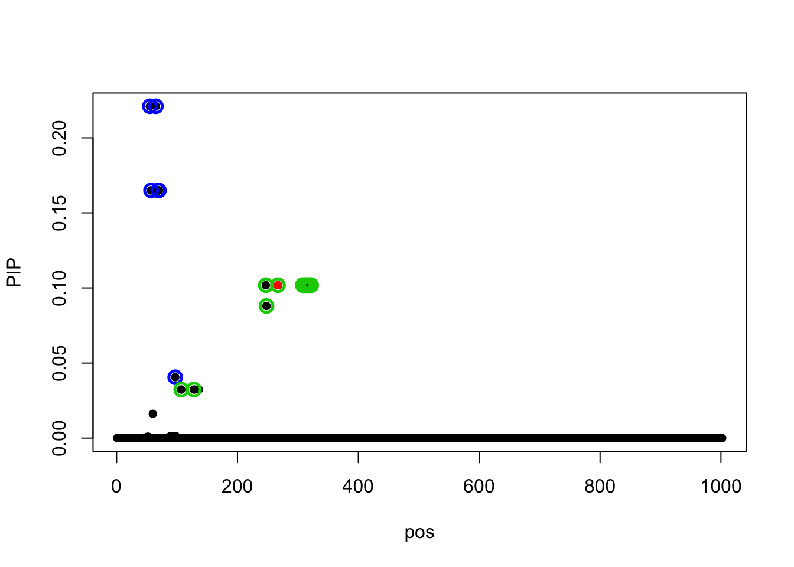
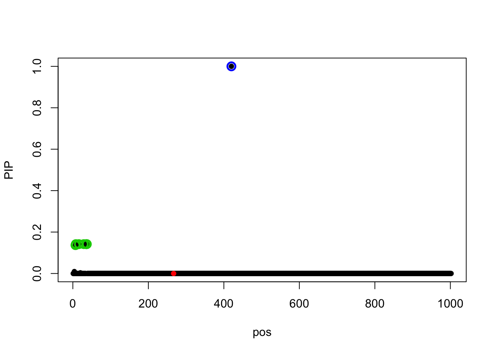
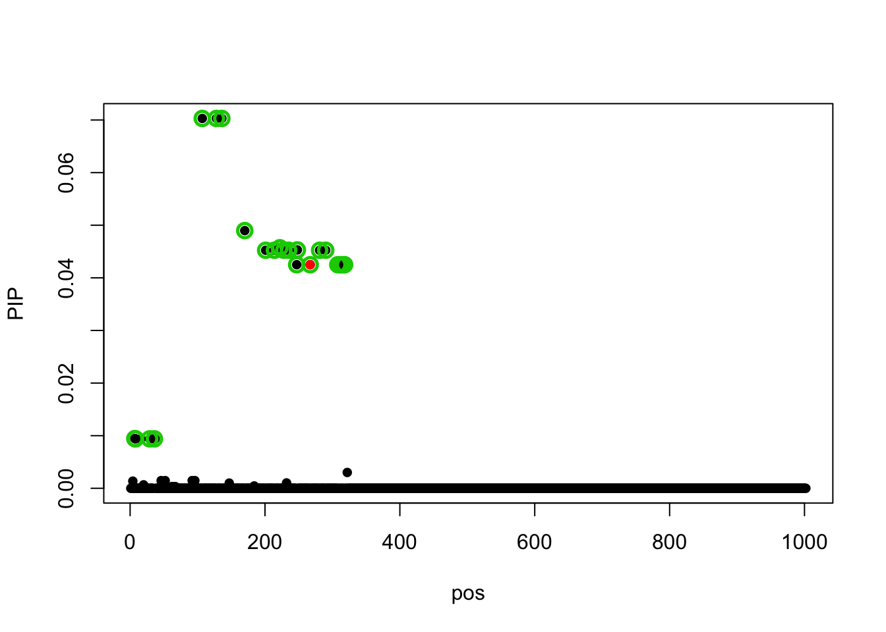
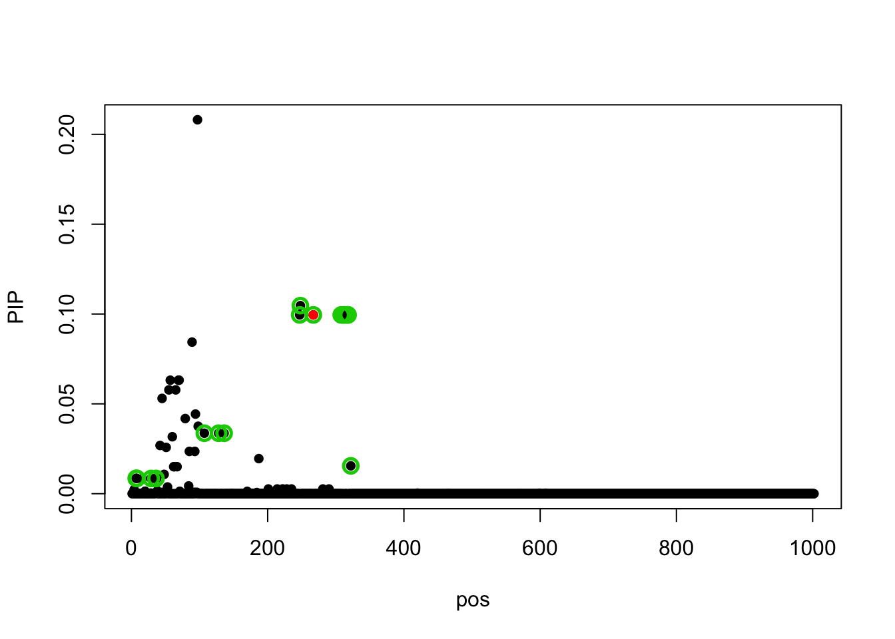
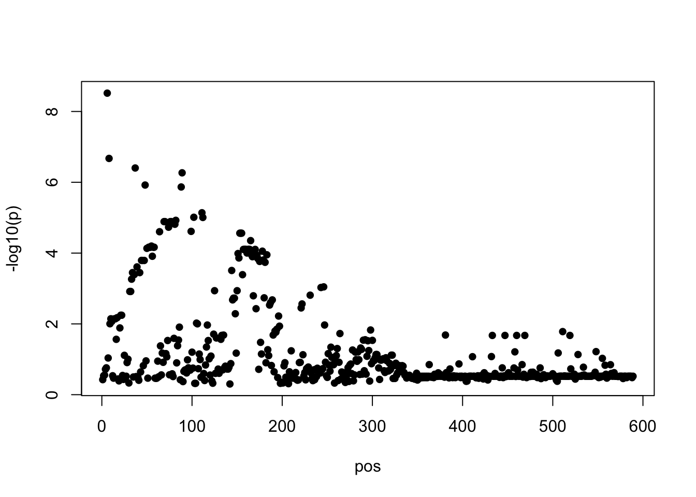
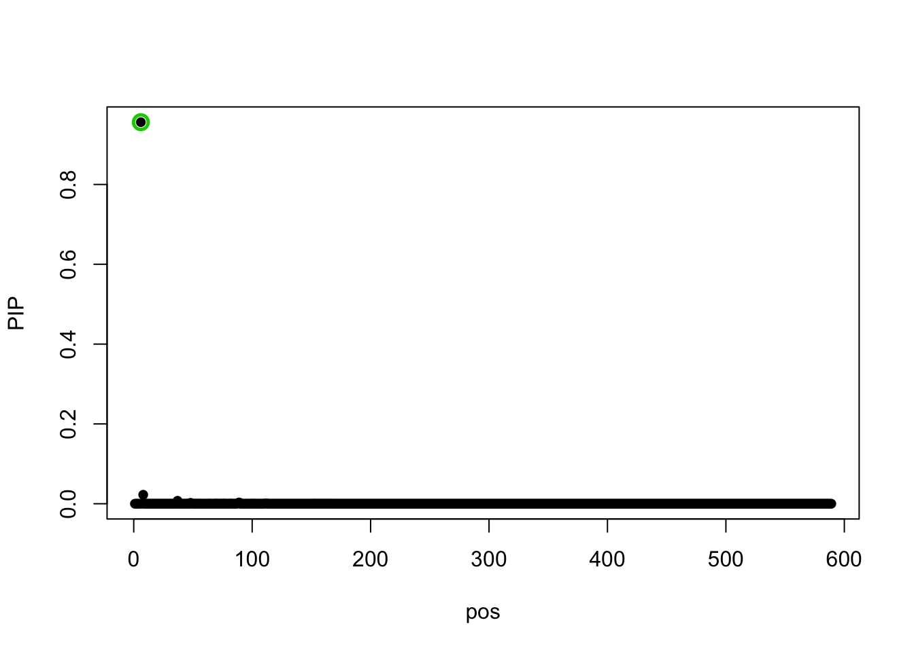
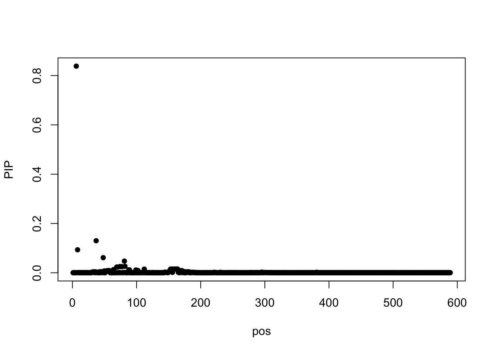
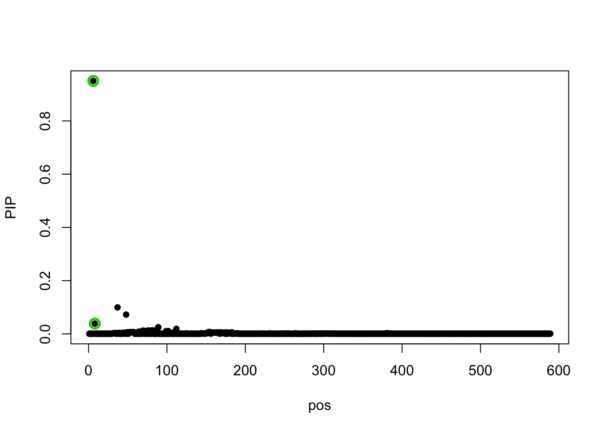

SuSiE FD Example
Yuxin Zou
5/14/2019
Last updated: 2019-06-02
Checks: 6 0
Knit directory: dsc-susie-z/
This reproducible R Markdown analysis was created with workflowr (version 1.3.0). The Checks tab describes the reproducibility checks that were applied when the results were created. The Past versions tab lists the development history.
Great! Since the R Markdown file has been committed to the Git repository, you know the exact version of the code that produced these results.
Great job! The global environment was empty. Objects defined in the global environment can affect the analysis in your R Markdown file in unknown ways. For reproduciblity it’s best to always run the code in an empty environment.
The command set.seed(20190115) was run prior to running the code in the R Markdown file. Setting a seed ensures that any results that rely on randomness, e.g. subsampling or permutations, are reproducible.
Great job! Recording the operating system, R version, and package versions is critical for reproducibility.
Nice! There were no cached chunks for this analysis, so you can be confident that you successfully produced the results during this run.
Great! You are using Git for version control. Tracking code development and connecting the code version to the results is critical for reproducibility. The version displayed above was the version of the Git repository at the time these results were generated.
Note that you need to be careful to ensure that all relevant files for the analysis have been committed to Git prior to generating the results (you can use wflow_publish or wflow_git_commit). workflowr only checks the R Markdown file, but you know if there are other scripts or data files that it depends on. Below is the status of the Git repository when the results were generated:
Ignored files:
Ignored: .DS_Store
Ignored: .Rhistory
Ignored: .Rproj.user/
Ignored: .sos/
Ignored: analysis/.DS_Store
Ignored: data/.DS_Store
Ignored: output/.DS_Store
Ignored: output/SuSiEFD/.DS_Store
Untracked files:
Untracked: data/random_data_31.rds
Untracked: data/random_data_31_sim_gaussian_35.rds
Untracked: data/random_data_31_sim_gaussian_35_get_sumstats_1.rds
Untracked: data/small_data_1.ld_in_file.in.ld
Untracked: data/small_data_1.ld_out_file.out.ld
Untracked: data/small_data_132.ld_in_file.in.ld
Untracked: data/small_data_132.ld_out_file.out.ld
Untracked: data/small_data_132_sim_gaussian_12.rds
Untracked: data/small_data_132_sim_gaussian_12_get_sumstats_1.rds
Untracked: data/small_data_1_sim_gaussian_2.rds
Untracked: data/small_data_1_sim_gaussian_2_get_sumstats_1.rds
Untracked: data/small_data_46.rds
Untracked: data/small_data_46_sim_gaussian_10.rds
Untracked: data/small_data_46_sim_gaussian_10_get_sumstats_2.rds
Untracked: data/small_data_69.ld_in_file.in.ld
Untracked: data/small_data_69.ld_out_file.out.ld
Untracked: data/small_data_69.rds
Untracked: data/small_data_69_sim_gaussian_3.rds
Untracked: data/small_data_69_sim_gaussian_3_get_sumstats_1.rds
Untracked: data/small_data_69_sim_gaussian_3_get_sumstats_1_susie_z_1.rds
Untracked: data/small_data_69_sim_gaussian_3_get_sumstats_1_susie_z_2.rds
Untracked: figure/
Untracked: output/SuSiEFD/r.in.pdf
Untracked: output/SuSiEFD/r.out.addz.pdf
Untracked: output/SuSiEFD/r.out.pdf
Untracked: output/SuSiEFD/small_data_148.ld_in_file.in.ld
Untracked: output/SuSiEFD/small_data_148.ld_out_file.out.ld
Untracked: output/SuSiEFD/small_data_148.rds
Untracked: output/SuSiEFD/small_data_148_sim_gaussian_1.rds
Untracked: output/SuSiEFD/small_data_148_sim_gaussian_1_get_sumstats_1.rds
Untracked: output/SuSiEFD/small_data_68_sim_gaussian_2_get_sumstats_1_caviar_4.cache.CAVIAR_condition_1.z
Untracked: output/SuSiEFD/small_data_68_sim_gaussian_2_get_sumstats_1_caviar_4.ld_out_z_file.out.z.ld
Untracked: output/SuSiEFD/susierss.in.2.gif
Untracked: output/SuSiEFD/susierss.in.2.pdf
Untracked: output/SuSiEFD/susierss.out.2.gif
Untracked: output/SuSiEFD/susierss.out.2.pdf
Untracked: output/SuSiEFD/susierss.out.addz.1.gif
Untracked: output/SuSiEFD/susierss.out.addz.1.pdf
Untracked: output/SuSiEFD/susierss.out.addz.2.pdf
Untracked: output/SuSiEFD/susierss.out.addz.2.w.gif
Untracked: output/SuSiEFD/susierss.out.addz.2.w.pdf
Untracked: output/SuSiEFD/susierss.out.addz.5.pdf.gif
Untracked: output/SuSiEFD/susierss.out.addz.5.pdf.pdf
Untracked: output/dscoutProblem475.rds
Untracked: output/dscoutProblem75.rds
Untracked: output/finemap_compare_random_data_null_dscout.rds
Untracked: output/finemap_compare_random_data_signal_dscout.rds
Untracked: output/finemap_compare_small_data_signal_dscout.rds
Untracked: output/finemap_compare_small_data_signal_dscout_RE8.rds
Untracked: output/r_compare_FINEMAP_PIP_ROC.rds
Untracked: output/r_compare_add_z_FINEMAP_PIP_ROC.rds
Untracked: output/r_compare_add_z_FINEMAP_ROC.rds
Untracked: output/r_compare_add_z_SuSiEb_ROC.rds
Untracked: output/r_compare_add_z_SuSiErss_ROC.rds
Untracked: output/r_compare_add_z_dscout_susie_finemap_tibble.rds
Untracked: output/r_compare_add_z_lambda_FINEMAP_ROC.rds
Untracked: output/r_compare_add_z_lambda_SuSiEb_ROC.rds
Untracked: output/r_compare_add_z_lambda_SuSiErss_ROC.rds
Untracked: output/r_compare_add_z_lambda_caviar_CAVIAR_ROC.rds
Untracked: output/r_compare_add_z_lambda_caviar_FINEMAP_ROC.rds
Untracked: output/r_compare_add_z_lambda_caviar_SuSiEb_L1_ROC.rds
Untracked: output/r_compare_add_z_lambda_caviar_SuSiEb_L2_ROC.rds
Untracked: output/r_compare_add_z_lambda_caviar_SuSiEb_L5_ROC.rds
Untracked: output/r_compare_add_z_lambda_caviar_SuSiErss_L1_ROC.rds
Untracked: output/r_compare_add_z_lambda_caviar_SuSiErss_L2_ROC.rds
Untracked: output/r_compare_add_z_lambda_caviar_SuSiErss_L5_ROC.rds
Untracked: output/r_compare_add_z_lambda_caviar_dscout_caviar_tibble.rds
Untracked: output/r_compare_add_z_lambda_caviar_dscout_finemap_tibble.rds
Untracked: output/r_compare_add_z_lambda_caviar_dscout_susiebhat_tibble.rds
Untracked: output/r_compare_add_z_lambda_caviar_dscout_susierss_tibble.rds
Untracked: output/r_compare_add_z_lambda_dscout_susie_finemap_tibble.rds
Untracked: output/r_compare_dscout_susie_finemappip_tibble.rds
Untracked: output/r_compare_dscout_susie_finemappip_truth_tibble.rds
Untracked: output/r_compare_finemap_v1.3.1_ROC.rds
Untracked: output/r_compare_finemapv1.3.1.rds
Untracked: output/r_compare_susieb_PIP_ROC.rds
Untracked: output/r_compare_susiepip_tibble.rds
Untracked: output/r_compare_susierss_PIP_ROC.rds
Untracked: output/random_data_100_sim_gaussian_null_1_get_sumstats_1_finemap_1.rds
Untracked: output/random_data_31_35_fit_em.rds
Untracked: output/random_data_76.rds
Untracked: output/random_data_76_sim_gaussian_8.rds
Untracked: output/random_data_76_sim_gaussian_8_get_sumstats_1.rds
Untracked: output/small_data_42_sim_gaussian_36_get_sumstats_2_susie_z_2.rds
Untracked: output/small_data_92_sim_gaussian_30_get_sumstats_2_susie_z_2.rds
Untracked: test.log
Untracked: test2.log
Untracked: test2_ll.log
Untracked: test2_post
Untracked: test2_set
Untracked: test_ll.log
Untracked: test_post
Untracked: test_set
Unstaged changes:
Modified: analysis/SuSiErssNotConverge.Rmd
Modified: analysis/SusieZPerformance.Rmd
Modified: analysis/SusieZPerformanceRE3.Rmd
Modified: output/dsc_susie_z_v_output.rds
Note that any generated files, e.g. HTML, png, CSS, etc., are not included in this status report because it is ok for generated content to have uncommitted changes.
These are the previous versions of the R Markdown and HTML files. If you’ve configured a remote Git repository (see ?wflow_git_remote), click on the hyperlinks in the table below to view them.
| File | Version | Author | Date | Message |
|---|---|---|---|---|
| Rmd | 95bfb0b | zouyuxin | 2019-06-02 | wflow_publish(“analysis/r_compare_add_z_lambda_caviar_Eg1.Rmd”) |
| html | 50f6504 | zouyuxin | 2019-05-31 | Build site. |
| html | 89356b9 | zouyuxin | 2019-05-31 | Build site. |
| Rmd | b8e4563 | zouyuxin | 2019-05-31 | wflow_publish(“analysis/r_compare_add_z_lambda_caviar_Eg1.Rmd”) |
| html | 9958144 | zouyuxin | 2019-05-31 | Build site. |
| Rmd | fdad965 | zouyuxin | 2019-05-31 | wflow_publish(“analysis/r_compare_add_z_lambda_caviar_Eg1.Rmd”) |
| html | 3276ace | zouyuxin | 2019-05-31 | Build site. |
| Rmd | b5f05d4 | zouyuxin | 2019-05-31 | wflow_publish(“analysis/r_compare_add_z_lambda_caviar_Eg1.Rmd”) |
| html | eaade2e | zouyuxin | 2019-05-31 | Build site. |
| Rmd | e48fde8 | zouyuxin | 2019-05-31 | wflow_publish(“analysis/r_compare_add_z_lambda_caviar_Eg1.Rmd”) |
| html | 4e4dacb | zouyuxin | 2019-05-10 | Build site. |
| Rmd | e0d5303 | zouyuxin | 2019-05-10 | wflow_publish(“analysis/r_compare_add_z_lambda_caviar_Eg1.Rmd”) |
| html | 6c6a789 | zouyuxin | 2019-05-10 | Build site. |
| Rmd | ad23e70 | zouyuxin | 2019-05-10 | wflow_publish(“analysis/r_compare_add_z_lambda_caviar_Eg1.Rmd”) |
| html | d7c55b3 | zouyuxin | 2019-05-10 | Build site. |
| Rmd | ff72e9a | zouyuxin | 2019-05-10 | wflow_publish(“analysis/r_compare_add_z_lambda_caviar_Eg1.Rmd”) |
library(data.table)
library(susieR)The data is simulated with PVE 0.2, n signal = 1.
Read data:
data = readRDS('output/SuSiEFD/small_data_68.rds')
r.in = as.matrix(fread('output/SuSiEFD/small_data_68.ld_in_file.in.ld'))
r.out = as.matrix(fread('output/SuSiEFD/small_data_68.ld_out_file.out.ld'))
sim = readRDS('output/SuSiEFD/small_data_68_sim_gaussian_2.rds')
ss = readRDS('output/SuSiEFD/small_data_68_sim_gaussian_2_get_sumstats_1.rds')Plot p values
z = ss$sumstats$bhat/ss$sumstats$shat
r.out.addz = cov2cor((data$N_out-1) * r.out+tcrossprod(z))
susie_plot(z, y='z', b = sim$meta$true_coef)
The true signal is 267.
The models below are fitted without estimating residual variance.
SuSiE rss
Using in sample R
fit_susierss_in = susie_rss(z, R = r.in, estimate_residual_variance = FALSE, L=2, track_fit = T, lambda = 0.1)Warning in susie_rss(z, R = r.in, estimate_residual_variance = FALSE,
L = 2, : This method is under active development, so it should not be
considered stable.Warning in susie_rss(z, R = r.in, estimate_residual_variance = FALSE, L =
2, : The maximum number of non-zero effects is greater than 1, this feature
is experimental.susie_plot(fit_susierss_in, y='PIP', b = sim$meta$true_coef)
Using out sample R
fit_susierss_out = susie_rss(z, R = r.out, estimate_residual_variance = FALSE, L=2, lambda=0.1, track_fit = T)Warning in susie_rss(z, R = r.out, estimate_residual_variance = FALSE,
L = 2, : This method is under active development, so it should not be
considered stable.Warning in susie_rss(z, R = r.out, estimate_residual_variance = FALSE, L =
2, : The maximum number of non-zero effects is greater than 1, this feature
is experimental.susie_plot(fit_susierss_out, y='PIP', b = sim$meta$true_coef)
Using out sample R addz
L = 2
fit_susierss_out_addz = susie_rss(z, R = r.out.addz, estimate_residual_variance = FALSE, L=2, lambda=0.1, track_fit = TRUE)Warning in susie_rss(z, R = r.out.addz, estimate_residual_variance =
FALSE, : This method is under active development, so it should not be
considered stable.Warning in susie_rss(z, R = r.out.addz, estimate_residual_variance =
FALSE, : The maximum number of non-zero effects is greater than 1, this
feature is experimental.susie_plot(fit_susierss_out_addz, y='PIP', b = sim$meta$true_coef)
420 has pip 1.
Plot each iteration:
library(magick)Linking to ImageMagick 6.9.9.39
Enabled features: cairo, fontconfig, freetype, lcms, pango, rsvg, webp
Disabled features: fftw, ghostscript, x11iters = image_read('output/SuSiEFD/susierss.out.addz.2.gif')
iters The true signal disappears after 3 iterations.
The true signal disappears after 3 iterations.
L = 1
fit_susierss_out_addz.1 = susie_rss(z, R = r.out.addz, estimate_residual_variance = FALSE, L=1, lambda=0.1, track_fit = TRUE)Warning in susie_rss(z, R = r.out.addz, estimate_residual_variance =
FALSE, : This method is under active development, so it should not be
considered stable.susie_plot(fit_susierss_out_addz.1, y='PIP', b = sim$meta$true_coef)
The model with L = 2 fails to capture the true signal but it has higher objective value than the model with L=1.
Try with prior variance = 20 and not estimate prior variance:
fit_susierss_out_addz.prior = susie_rss(z, R = r.out.addz, estimate_residual_variance = FALSE, L=2, lambda=0.1, track_fit = TRUE, prior_variance = 20, estimate_prior_variance = FALSE)Warning in susie_rss(z, R = r.out.addz, estimate_residual_variance =
FALSE, : This method is under active development, so it should not be
considered stable.Warning in susie_rss(z, R = r.out.addz, estimate_residual_variance =
FALSE, : The maximum number of non-zero effects is greater than 1, this
feature is experimental.susie_plot(fit_susierss_out_addz.prior, y='PIP', b = sim$meta$true_coef)
correlation between true signal (267) and false signal (420)
The in sample correlation is
r.in[c(267, 420), c(267, 420)] V267 V420
[1,] 1.00000000 -0.01674701
[2,] -0.01674701 1.00000000The out sample correlation is
r.out[c(267, 420), c(267, 420)] V267 V420
[1,] 1.0000000 0.6631455
[2,] 0.6631455 1.0000000The out sample correlation add z is
r.out.addz[c(267, 420), c(267, 420)] V267 V420
[1,] 1.0000000 0.5762609
[2,] 0.5762609 1.0000000Remove SNPs have MAP < 0.05
idx = which(data$maf_out > 0.05)
X.in = data$X_in[, idx]
X.out = data$X_out[, idx]
r.in.r = cor(X.in)
r.out.r = cor(X.out)
z.r = z[idx]
r.out.addz.r = cov2cor((data$N_out-1) * r.out.r+tcrossprod(z.r))
susie_plot(z.r, y='z', b = sim$meta$true_coef[idx])
Using in sample R
fit_susierss_in.r = susie_rss(z.r, R = r.in.r, estimate_residual_variance = FALSE, L=2, track_fit = T, lambda = 0.1)Warning in susie_rss(z.r, R = r.in.r, estimate_residual_variance = FALSE, :
This method is under active development, so it should not be considered
stable.Warning in susie_rss(z.r, R = r.in.r, estimate_residual_variance = FALSE, :
The maximum number of non-zero effects is greater than 1, this feature is
experimental.susie_plot(fit_susierss_in.r, y='PIP', b = sim$meta$true_coef[idx])
Using out sample R
fit_susierss_out.r = susie_rss(z.r, R = r.out.r, estimate_residual_variance = FALSE, L=2, lambda=0.1, track_fit = T)Warning in susie_rss(z.r, R = r.out.r, estimate_residual_variance =
FALSE, : This method is under active development, so it should not be
considered stable.Warning in susie_rss(z.r, R = r.out.r, estimate_residual_variance =
FALSE, : The maximum number of non-zero effects is greater than 1, this
feature is experimental.susie_plot(fit_susierss_out.r, y='PIP', b = sim$meta$true_coef[idx])
Using out sample R addz
fit_susierss_out_addz.r = susie_rss(z.r, R = r.out.addz.r, estimate_residual_variance = FALSE, L=2, lambda=0.1, track_fit = TRUE)Warning in susie_rss(z.r, R = r.out.addz.r, estimate_residual_variance
= FALSE, : This method is under active development, so it should not be
considered stable.Warning in susie_rss(z.r, R = r.out.addz.r, estimate_residual_variance =
FALSE, : The maximum number of non-zero effects is greater than 1, this
feature is experimental.susie_plot(fit_susierss_out_addz.r, y='PIP', b = sim$meta$true_coef[idx])
sessionInfo()R version 3.5.1 (2018-07-02)
Platform: x86_64-apple-darwin15.6.0 (64-bit)
Running under: macOS 10.14.4
Matrix products: default
BLAS: /Library/Frameworks/R.framework/Versions/3.5/Resources/lib/libRblas.0.dylib
LAPACK: /Library/Frameworks/R.framework/Versions/3.5/Resources/lib/libRlapack.dylib
locale:
[1] en_US.UTF-8/en_US.UTF-8/en_US.UTF-8/C/en_US.UTF-8/en_US.UTF-8
attached base packages:
[1] stats graphics grDevices utils datasets methods base
other attached packages:
[1] magick_2.0 susieR_0.8.1.0521 data.table_1.12.2
loaded via a namespace (and not attached):
[1] workflowr_1.3.0 Rcpp_1.0.1 lattice_0.20-38 digest_0.6.19
[5] rprojroot_1.3-2 MASS_7.3-51.4 grid_3.5.1 backports_1.1.4
[9] git2r_0.25.2 magrittr_1.5 evaluate_0.13 stringi_1.4.3
[13] wavethresh_4.6.8 fs_1.3.1 whisker_0.3-2 Matrix_1.2-17
[17] rmarkdown_1.13 tools_3.5.1 stringr_1.4.0 glue_1.3.1
[21] xfun_0.7 yaml_2.2.0 compiler_3.5.1 htmltools_0.3.6
[25] knitr_1.23